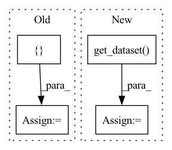

Pattern ID :23942

Before Change
train_dataset = ConcatDataset(train_split_list)
val_dataset = ConcatDataset(val_split_list)
all_dataset = ConcatDataset([train_dataset, val_dataset])
dataset_dict = {
"train": train_dataset,
After Change
supported_dataset = ["iwildcam", "camelyon17", "fmow"]
assert dataset_name in supported_dataset
dataset = wilds.get_dataset(dataset_name, root_dir=root, download=True)
num_classes = dataset.n_classes
return convert_from_wilds_dataset(dataset_name,
dataset.get_subset(split=split, transform=transform)), num_classes
In pattern: SUPERPATTERN
Frequency: 3
Non-data size: 4
Instances
Fragment ID: 74486675
Project Name: thuml/transfer-learning-library
Commit Name: babf26f7d7a9ee351c2a7f1bb35ae6f9a4e423be
Time: 2021-08-24
Author: chenbx18@mails.tsinghua.edu.cn
File Name: examples/domain_generalization/classification/utils.py
M Class Name: AnonimousClass
N Class Name: AnonimousClass
M Method Name: get_dataset(7)
N Method Name: get_dataset(7)
M Parent Class:
N Parent Class:
M File Name: examples/domain_generalization/classification/utils.py
N File Name: examples/domain_generalization/classification/utils.py
M Start Line: 55
M End Line: 91
N Start Line: 107
N End Line: 165
'>
Before Change
auto_augment=args.auto_augment,
norm_mean=args.norm_mean, norm_std=args.norm_std)
labeled_train_transform = MultipleApply([weak_augment, strong_augment])
unlabeled_train_transform = MultipleApply([weak_augment, strong_augment])
val_transform = utils.get_val_transform(args.val_resizing, norm_mean=args.norm_mean, norm_std=args.norm_std)
print("labeled_train_transform: ", labeled_train_transform)
print("unlabeled_train_transform: ", unlabeled_train_transform)
After Change
val_transform,
unlabeled_train_transform=weak_augment,
seed=args.seed)
_, strong_augmented_unlabeled_dataset, _ = \
utils.get_dataset(args.data,
args.num_samples_per_class,
args.root, labeled_train_transform,
val_transform,
unlabeled_train_transform=strong_augment,
seed=args.seed)
strong_augmented_unlabeled_dataset = utils.convert_dataset(strong_augmented_unlabeled_dataset)
print("labeled_dataset_size: ", len(labeled_train_dataset))
print("unlabeled_dataset_size: ", len(weak_augmented_unlabeled_dataset))
'>
Fragment ID: 74486676
Project Name: thuml/transfer-learning-library
Commit Name: b9bd9cd3c186e83e248453883923c9bd869d0923
Time: 2022-06-30
Author: 57670068+tsingcbx99@users.noreply.github.com
File Name: examples/semi_supervised_learning/image_classification/noisy_student.py
M Class Name: AnonimousClass
N Class Name: AnonimousClass
M Method Name: main(1)
N Method Name: main(1)
M Parent Class:
N Parent Class:
M File Name: examples/semi_supervised_learning/image_classification/noisy_student.py
N File Name: examples/semi_supervised_learning/image_classification/noisy_student.py
M Start Line: 72
M End Line: 145
N Start Line: 106
N End Line: 192
'>
Before Change
batch_size=self.poison_num, num_workers=0)
target_imgs, _ = self.model.get_data(next(iter(target_dataloader)))
dataset_list = [target_class_dataset]
for source_class in other_classes:
source_class_dataset = self.dataset.get_dataset(mode="train", full=True, classes=[source_class])
poison_source_class_dataset, other_source_class_dataset = self.dataset.split_set(
After Change
batch_size=self.poison_num, num_workers=0)
target_imgs, _ = self.model.get_data(next(iter(target_dataloader)))
full_set = self.dataset.get_dataset("train", full=True)
if self.poison_generation_method == "pgd":
poison_imgs, _ = self.pgd.craft_example(_input=target_imgs)
poison_imgs = self.add_mark(poison_imgs)
poison_set = MyDataset(poison_imgs, poison_label)
'>
Fragment ID: 74486667
Project Name: ain-soph/trojanzoo
Commit Name: 8983bfb499fcecbf4afd1e1301d4dbe47fa54b45
Time: 2020-08-14
Author: ain-soph@live.com
File Name: trojanzoo/attack/backdoor/clean_label.py
M Class Name: Clean_Label
N Class Name: Clean_Label
M Method Name: attack(3)
N Method Name: attack(3)
M Parent Class: BadNet
N Parent Class: BadNet
M File Name: trojanzoo/attack/backdoor/clean_label.py
N File Name: trojanzoo/attack/backdoor/clean_label.py
M Start Line: 81
M End Line: 117
N Start Line: 89
N End Line: 122